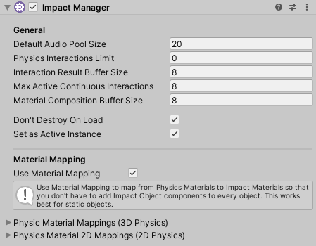
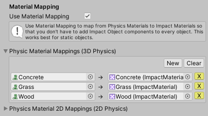

Impact Manager
Impact version 1.1.0 introduces the Impact Manager, a component you can add to your scene where you can configure various things about the Impact system.
To create an Impact Manager, navigate to . An Impact Manager game object will be created in your scene and will be automatically selected. Note that if an Impact Manager does not exist in your scene and an interaction is triggered, one will be automatically created with default values.
Once you have an Impact Manager, there are several properties you can edit.
- Physics Interactions Limit – The limit on how many physics interactions can be processed in a single fixed update. You can use this if you have a lot of objects that trigger physics interactions and need to ensure that performance remains reasonable. This is a hard limit that will be checked as soon as a collision message is recieved. If the limit has been reached for that fixed update frame, processing will be aborted immediately. Typically you would want to set this to be about the same size as your object pools. Triggers can be set as High Priority to ignore this limit.
- Interaction Result Buffer Size – The size of the array used to retrieve interaction results from impact materials. The size of this buffer limits the number of interaction results that can be returned by a single interaction, so make sure this is set appropriately for how many interaction results your materials can return. This buffer is shared by all objects in the scene.
- Max Active Continuous Interactions – The maximum number of continuous interactions (such as sliding and rolling) that can be active at once across all objects in the scene.
- Material Composition Buffer Size – The maximum number of material composition results that can be returned when using material composition. For example, if you have a terrain you will probably want to set this to the number of textures your terrain uses.
- Set as Active Instance – Should the manager be set as the active Impact Manager instance on Awake?
- Don't Destroy On Load – Should the manager persist between scene loads?
Material Mapping
Material Mapping allows you to map Unity's Physics Materials to Impact Materials. This is useful so that you don't necessarily have to add an Impact Object component to all of the objects in your scene.
Note: Material Mapping works best for static, single material objects. Without an Impact Object component attached, no material composition or velocity data can be obtained.
Simply check Use Material Mapping to enable this feature. Once enabled, you can expand either the 3D Physics or 2D Physics sections.
Click the New button to create a map. The Physics Material you want to map from goes on the left, and the Impact Material goes on the right.